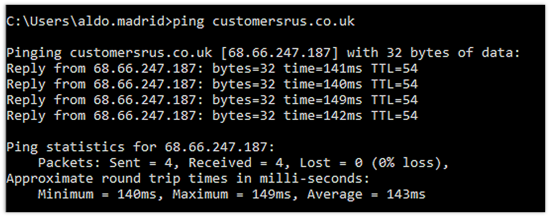
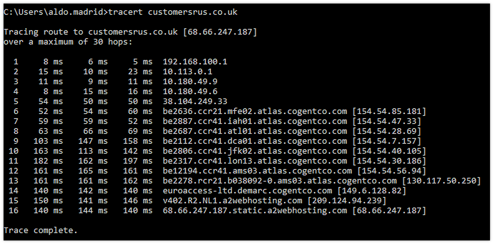
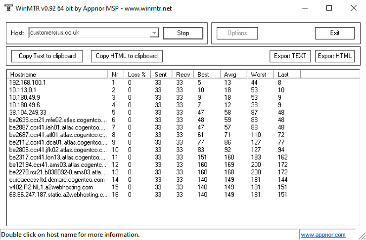

Collaborative Learning Discussion 2
Scanning Excersise
Initial Post
Network diagnosing and troubleshooting is performed to find problems such as slow traffic or misconfiguration. Operating systems already have built-in diagnosing utility tools solve internet problems (Bliss, 2022). Some of these most common tools are ping, traceroute and MTR.
Ping is a simple tool used to verify if connection to a requested IP address can be stablished. This tool gives useful information such as the time that took for the other side of the connection to respond in milliseconds and TTL (Time to Live) which represents the number of hops that a packet can travel before being discarded (CloudDirect, 2022). Usually ping utility is configured for a maximum TTL number of 64, meaning that if packet sent takes more than 64 hops it will be discarded.
Traceroute is useful to map and understand the name of the servers that the data packet sent hops before reaching the destination server (CloudDirect, 2022). Traceroute sends pings to each one of the detected servers and in the case the server cannot be reached a “Request timed out” message is displayed. This could be expected because some computers and servers are configured to block ping requests.
Finally, MTR (MyTraceRoute) combines the functionality of ping and traceroute with the difference that ping requests are continuously sent usually every second (CloudDirect, 2022).
References:
Bliss, H. 2022. What is a Network Diagnostic? Available from: https://www.easytechjunkie.com/what-is-a-network-diagnostic.htm [Accessed: 5 February 2022]
CloudDirect, 2022. Using Traceroute, Ping, MTR, and PathPing. Available from: https://www.clouddirect.net/knowledge-base/KB0011455/using-traceroute-ping-mtr-and-pathping [Accessed: 5 February 2022]


